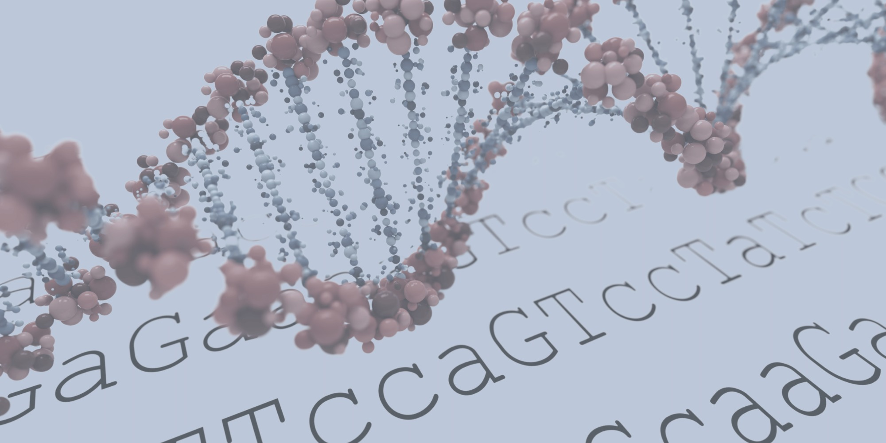
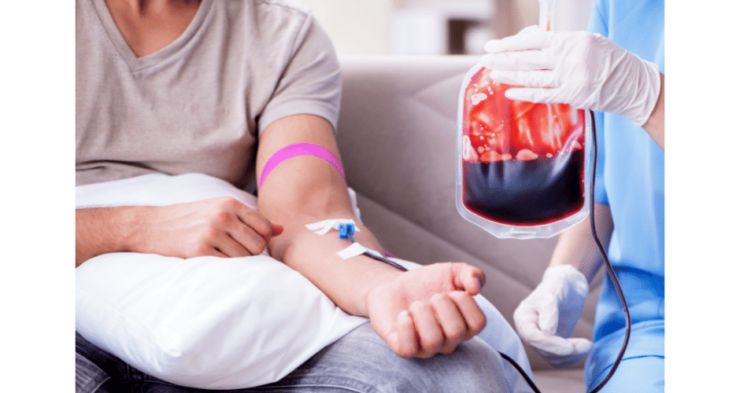

Patient deliverable · Brochure
Paediatric Crohn’s disease: a parent’s guide
Written for parents at the point of diagnosis — explaining the disease, and how to support a child living with it.
Freelance medical writer
I turn complex medical information centred on genomics, genetics, and gene-editing into content that HCPs, patients, and commercial teams can actually use — for medical communications agencies, biotech, and pharmaceutical companies.
Trusted by


What I write
The science does not change between a slide kit and a patient booklet — the register does. Each of these is written for who receives it.

Therapy areas
A brief in any of these does not start with me getting up to speed.
What clients say
Amy is a superb and versatile writer. In addition to her long scientific pedigree, she also knows how to target texts to the needs of different audiences. Whether she writes for medical journals, patient websites or prepares articles with a more journalistic slant, they get top marks. We are very lucky to have her on our team of freelancers.
Quality medical writing requires in-depth scientific understanding coupled with excellent communication skills and attention to detail. Amy has all of the above and consistently delivers outstanding work — making for happy clients!
Selected work
Two pieces, written for opposite ends of the readership.
Patient deliverable · Brochure
Written for parents at the point of diagnosis — explaining the disease, and how to support a child living with it.

HCP deliverable · Article
A referenced read of the trial data behind the first FDA-approved cell-based gene therapy, written for haematologists weighing the risk.
Tell me the audience, the format, and the deadline. I reply to every enquiry within 24 hours.